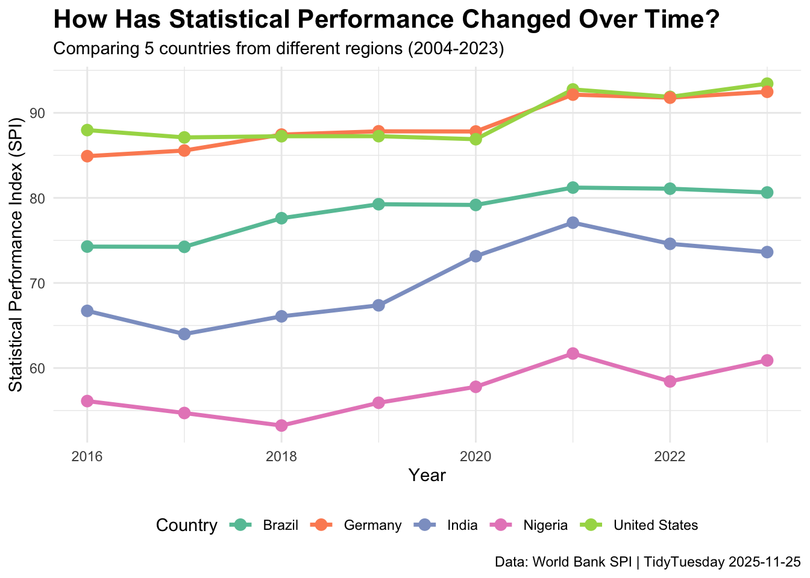
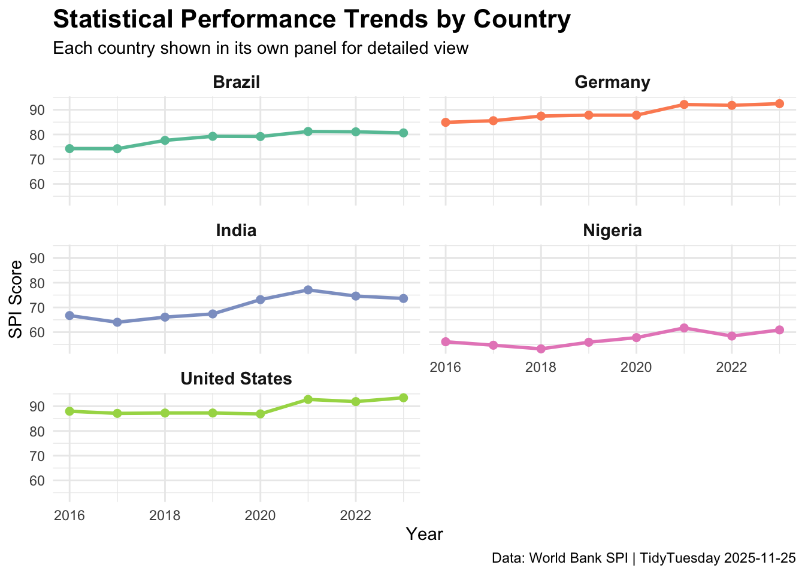

Show code
library(tidyverse)
library(here)
library(tidytuesdayR)Week of 2025-11-25
This week’s Tidy Tuesday dataset comes from the World Bank Statistical Performance Indicators (SPI). The SPI measures how well countries collect, process, and use statistical data. A higher score means a country has better statistical infrastructure and practices.
Research Question: How has the statistical performance of a country changed over time?
I learned how to use tabset panels in Quarto. Tabset panels organize content into clickable tabs, so readers can switch between different views without scrolling through a long document.
To create a tabset, you use this syntax:
::: {.panel-tabset}
## Tab 1 Name
Content for tab 1
## Tab 2 Name
Content for tab 2
:::The ::: markers create a special “div” container, and .panel-tabset tells Quarto to make it into tabs. Honestly, I thinkt this is one of the coolest things about Quarto…
library(tidyverse)
library(here)
library(tidytuesdayR)tuesdata<- tidytuesdayR::tt_load('2025-11-25')
# This is the main dataset with overall spi scores by country and year
spi_data <- tuesdata$spi
# view data # see what years are available in the data
# unique() gives all the different values in a column
# sort() puts them in order
sort(unique(spi_data$year)) [1] 2004 2005 2006 2007 2008 2009 2010 2011 2012 2013 2014 2015 2016 2017 2018
[16] 2019 2020 2021 2022 2023# How many countries are in the dataset?
n_distinct(spi_data$country) # n_distinct() counts unique values[1] 217That a lot of countries. I only want to keep 5.
selected_countries <- c("United States", "Brazil", "India", "Nigeria", "Germany") # create a vector of countries to analyze
spi_subset <- spi_data %>% # filter the data to only include selected countries
filter(country %in% selected_countries) %>% # checks if country is in my list
filter(year >= 2016) %>%
select(country, year, overall_score) # pick columns to keep
# Check that it worked
head(spi_subset)# A tibble: 6 × 3
country year overall_score
<chr> <dbl> <dbl>
1 United States 2023 93.4
2 Germany 2023 92.5
3 Brazil 2023 80.6
4 India 2023 73.6
5 Nigeria 2023 60.9
6 United States 2022 91.9Now for the fun part - let’s visualize how statistical performance has changed over time!
# Create a line plot showing SPI over time for each country
line_plot_all <- spi_subset %>%
ggplot(aes(x = year, # year
y = overall_score, # SPI score
color = country, # different color for each country
group = country)) + # group points by country for the lines
geom_line(linewidth = 1.2) + # set line thickness
geom_point(size = 3) + # set points on line for individual data and adjust size of dot
scale_x_continuous(breaks = seq(2004, 2023, by = 2)) + # sets which years to show as tick marks
scale_color_brewer(palette = "Set2") + # "Set2" is a colorblind friendly palette
labs(title = "How Has Statistical Performance Changed Over Time?", # add titles and axis labels
subtitle = "Comparing 5 countries from different regions (2004-2023)",
caption = "Data: World Bank SPI | TidyTuesday 2025-11-25",
x = "Year",
y = "Statistical Performance Index (SPI)",
color = "Country") + # set color to individual country
theme_minimal() +
theme(plot.title = element_text(size = 16, face = "bold"), # edit title
legend.position = "bottom") # put legend on bottom of plot
line_plot_all
ggsave(here("Tidy_Tuesday", "Week_04", "output", "spi_over_time.png"),
width = 10,
height = 6)# Create a faceted plot - each country gets its own mini-plot
facet_plot <- spi_subset %>%
ggplot(aes(x = year, # set x and y
y = overall_score,
color = country)) +
geom_line(linewidth = 1) +
geom_point(size = 2) +
facet_wrap(~ country, ncol = 2) + # arrange in 2 columns
scale_x_continuous(breaks = seq(2016, 2023, by = 2)) + # which years to show on x axis
scale_color_brewer(palette = "Set2") +
labs(title = "Statistical Performance Trends by Country",
subtitle = "Each country shown in its own panel for detailed view",
caption = "Data: World Bank SPI | TidyTuesday 2025-11-25",
x = "Year",
y = "SPI Score") +
theme_minimal() +
theme(plot.title = element_text(size = 16, face = "bold"),
legend.position = "none", # hide legend since colors match the facet labels
strip.text = element_text(size = 11, face = "bold")) # mke labels stand out
facet_plot
ggsave(here("Tidy_Tuesday", "Week_04", "output", "spi_over_time_facet.png"),
width = 10,
height = 6)All five countries show generally improving statistical performance from 2016-2023. Germany and the United States consistently score highest, while Nigeria shows the most room for growth.